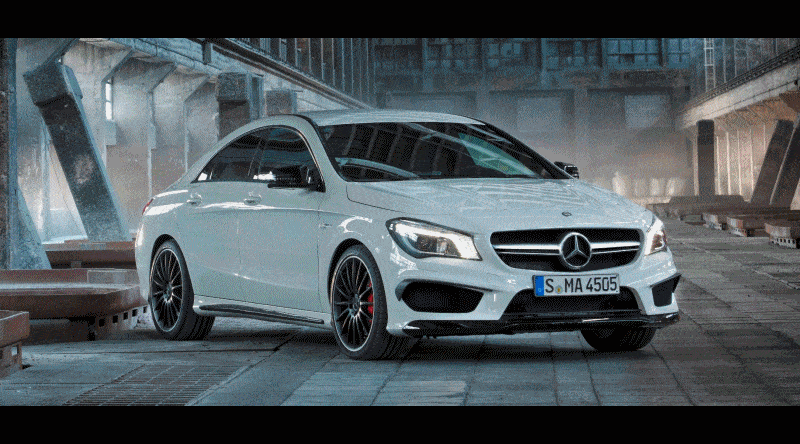
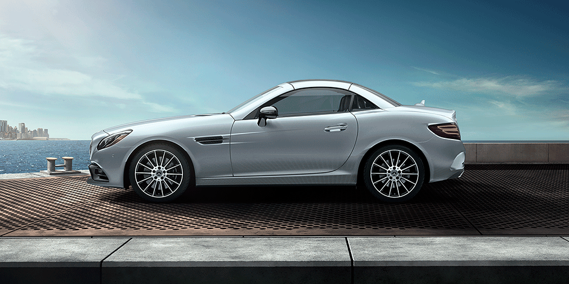
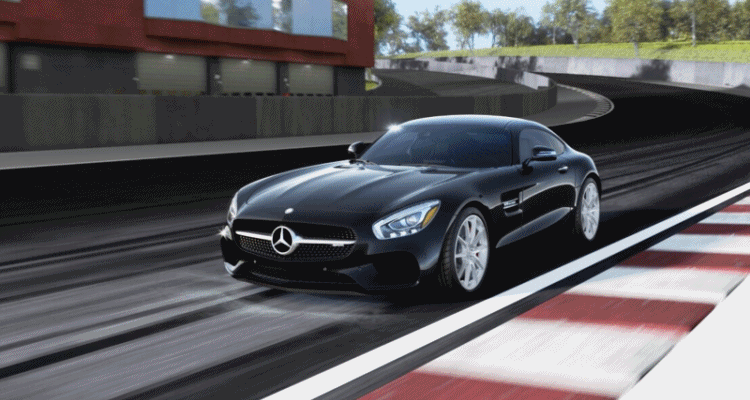

Tästä voit katsoa CLA, SLC tai AMG GT-mallien tiedot

Näyttävän voimakkaat linjat yhdessä sisään- ja ulospäin kaartuvien pintojen kanssa antavat CLA Coupélle sen edistyksellisen, urheilullisen luonteen. Sen ikkunat ovat tyypilliset coupé-autolle: kehyksettömät ikkunat taikka kromiset tai korkeakiiltoisen mustat kehykset (varusteista riippuen) antavat autolle erityisen ylellisen ja näyttävän ilmeen. Kattolinja kaartuu hienostuneesti perää kohden, jolle puskuri ja siihen integroidut pakoputken päätykappaleet sekä tyylikäs takaspoileri antavat omintakeisen ilmeen. Perässä komeilevat CLA:lle ominaisen malliset takavalot, jotka saa lisävarusteena täysin LED-valoin toteutettuina.

Maskuliinisen urheilullinen keula saa aikaan vahvan ilmeen, jota uuden sukupolven SLC huokuu myös seistessään paikallaan. Myös edistyksellinen valotekniikka LED Intelligent Light System -valojärjestelmän yhteydessä vahvistaa tätä vaikutelmaa.
Voimakkaat mittasuhteet ovat ominaisia auton perälle urheilullisesti muotoiltuine lokasuojineen. Erityisesti takapuskuri, jossa on musta diffuusori ja integroidut pakoputkenpäät, viestittää uuden sukupolven SLC:n ajodynaamisista mahdollisuuksista.
Linkki Mercedes-Benzin sivuille, jossa voit katsoa tarkemmat tiedot SLC-mallista:

Mercedes-AMG GT3 -kilpa-autosta aina Mercedes-AMG GT Roadsteriin saakka: Mercedes-AMG GT -perheen kaikkia autoja yhdistää se, että
niiden juuret ovat moottoriurheilussa. Niiden erehtymättömästi tunnistettava soundi tarttuu heti korvaan. Niiden ainutlaatuinen design
kiinnittää heti huomion. Mercedes-AMG GT -perhe muodostaa tuotevalikoimamme terävimmän kärjen. Siihen kuuluvat Mercedes-AMG GT,
Mercedes-AMG GT S, Mercedes-AMG GT C Edition 50 ja Mercedes-AMG GT R sekä avoautomallit Mercedes-AMG GT Roadster ja
Mercedes-AMG GT C Roadster. Moottoriurheilusta innostuneiden suunnittelijoiden ansiosta niillä on poikkeuksellisen urheiluauton geenit:
tekniikka ja insinööriosaaminen periytyvät suoraan kilparadoilta. Toisin sanoen: ”Handcrafted by Racers”.
Linkki Mercedes-Benzin sivuille, jossa voit katsoa tarkemmat tiedot AMG GT-mallista: